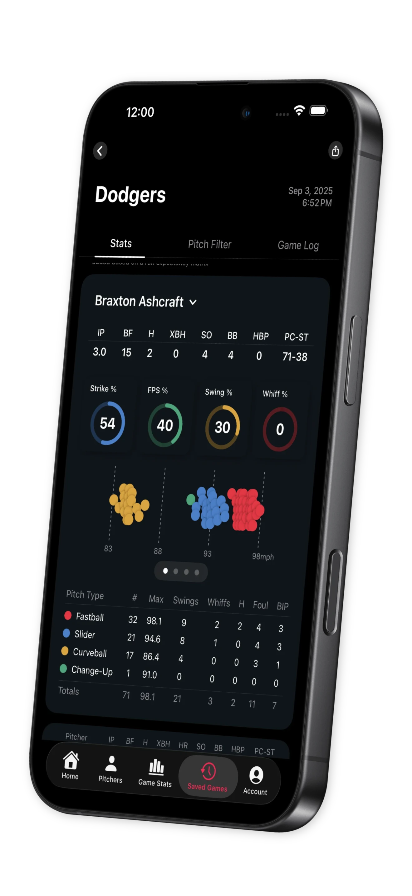
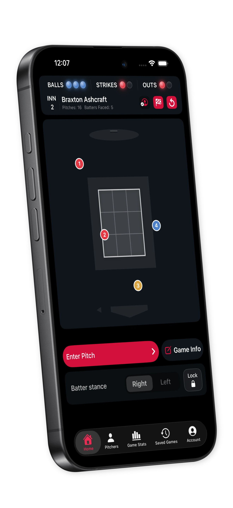
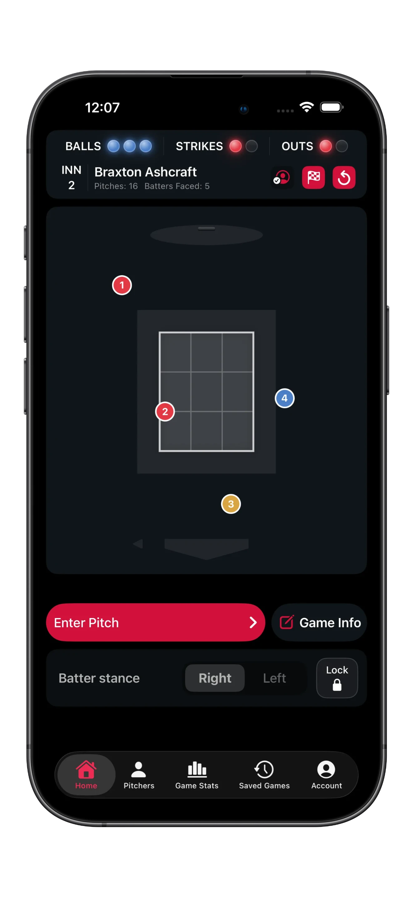
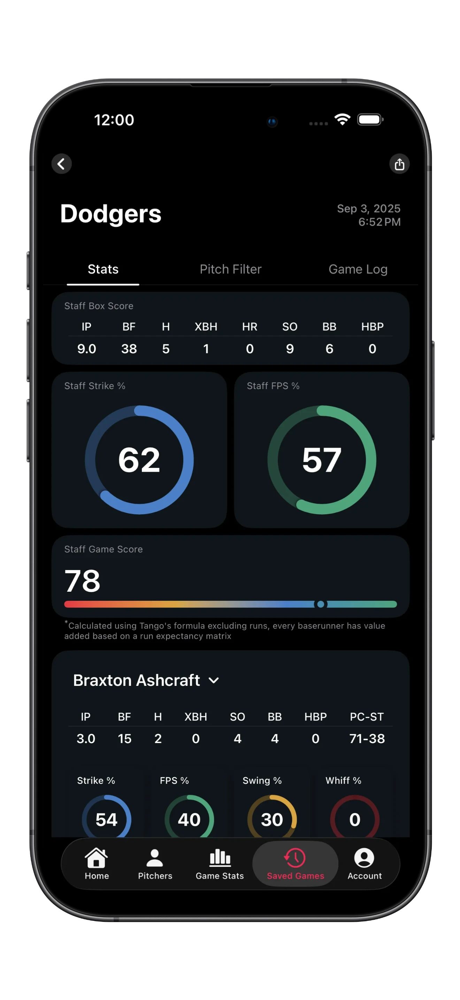
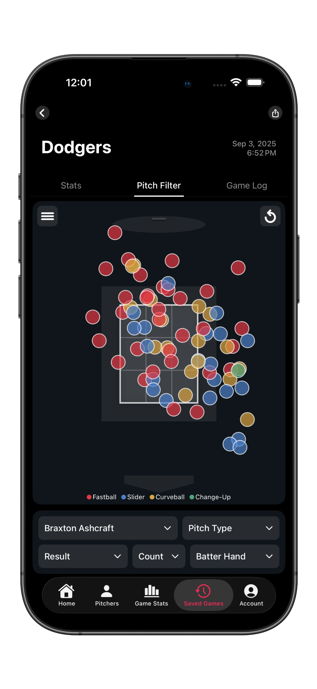
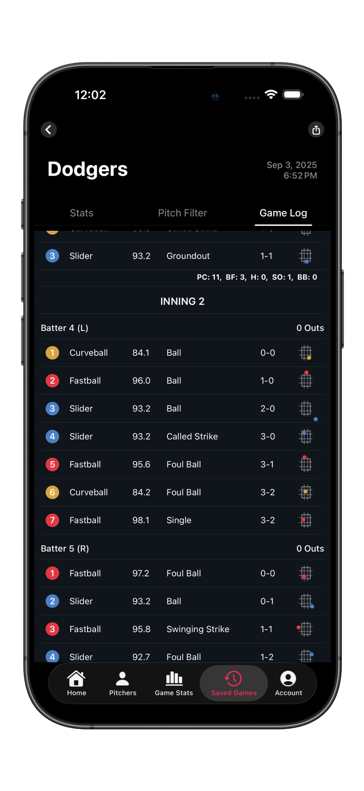
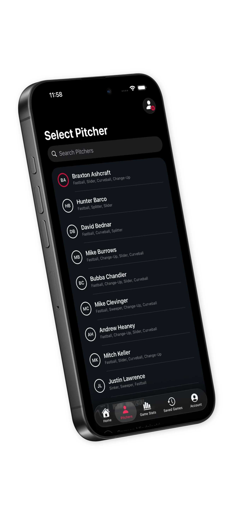
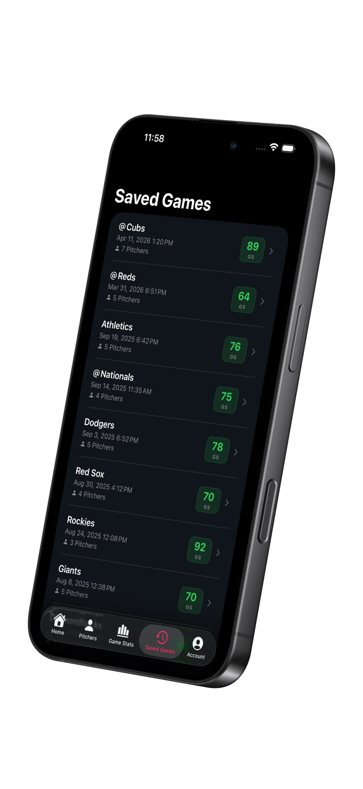

Chart Every Pitch.
Win The Matchup.
Seam is the fastest way to chart, analyze, and understand pitching performance — capturing every pitch in real time and turning it into insight, right from your phone.
 Free on iOS. Seam Pro available.
Free on iOS. Seam Pro available.


Everything You Need On The Mound
From the first warm-up toss to the final out — capture it, break it down, and act on it.
Chart Every Pitch, Every Game
Record pitches in real time with an interface built for the speed of the game. Tap location, type, result, and velocity so nothing slips through the cracks.
- Plot exact pitch location on the strike zone
- Track pitch type, velocity, and result in one tap
- Live count, outs, and batters-faced always in view

Stats That Tell The Story
The moment the game ends, Seam turns your chart into a full breakdown — staff box score, strike percentage, first-pitch strike rate, and an overall game score.
- Staff & per-pitcher box scores
- Strike % and first-pitch-strike % at a glance
- Game Score built on a run-expectancy model

See Every Pitch In Context
The pitch-location map plots every pitch by type so tendencies jump off the screen. Filter by pitcher, count, result, or batter hand to answer any question in seconds.
- Color-coded location map by pitch type
- Filter by count, result, and batter handedness
- Spot patterns across an outing instantly

The Whole Outing, Pitch By Pitch
Every pitch is logged in order with type, velocity, result, and the count it came in — grouped by inning and batter, with a running line score as the game unfolds.
- Color-coded by pitch type with velocity and result
- Broken out by inning, batter, and handedness
- Running PC, BF, H, SO, and BB totals per inning

Built Around Your Roster
Save pitcher profiles to keep your staff organized and start a new game in seconds. Revisit any saved game for post-game analysis whenever you need it.
- Reusable pitcher profiles with their arsenals
- Every game saved and ready to review
- Configure velocity input and your units


Take It To
The Next Level
Seam Pro keeps your entire program in sync. Back up every chart to the cloud, work across all your devices, and make smarter calls from the dugout.
Cloud Backup
Every chart saved securely to the cloud with industry-standard encryption.
Unlimited Devices
Sign in anywhere and pick up right where you left off — no limits.
Offline Sync
Chart with no signal — everything syncs the moment you reconnect.
Focused On The Game
No clutter, no noise — just the tools that help you get better.
Private By Default
Your data is yours. Without an account, everything stays on your device — Seam never sells your information.
Zero Ads
Your focus belongs on the field — not on dismissing pop-ups. Seam is completely ad-free.
Ready Anywhere
No connection required. Chart a game from any field, any time, and sync up when you're back online.
Start Charting Today
From rec leagues to the pros — Seam is your pitch-charting companion. Download free and chart your first game in minutes.